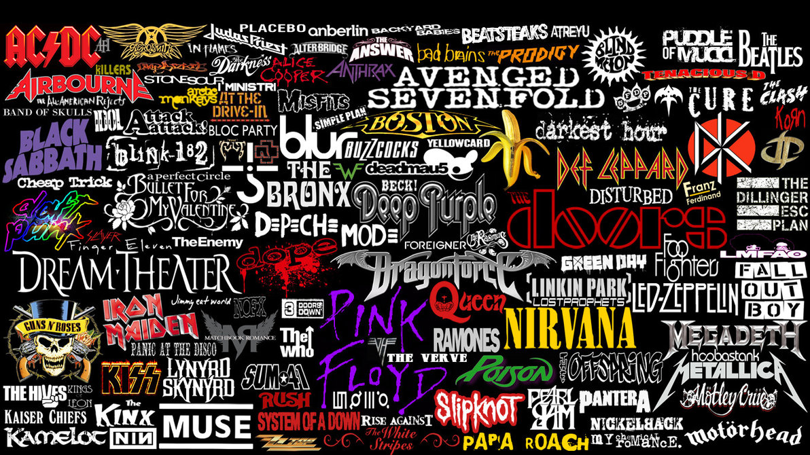
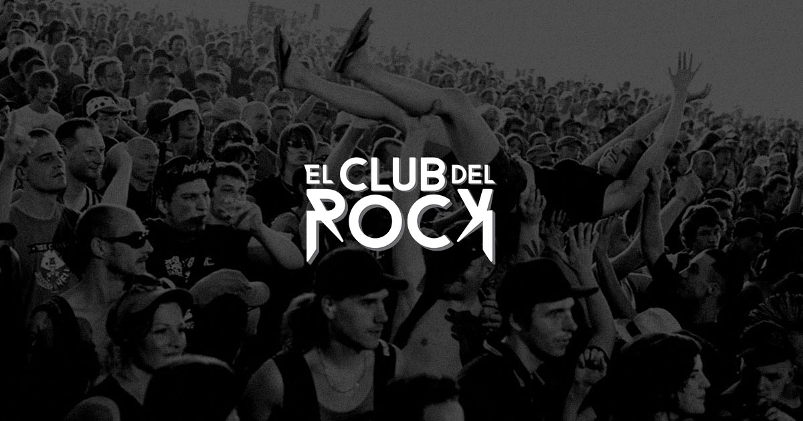
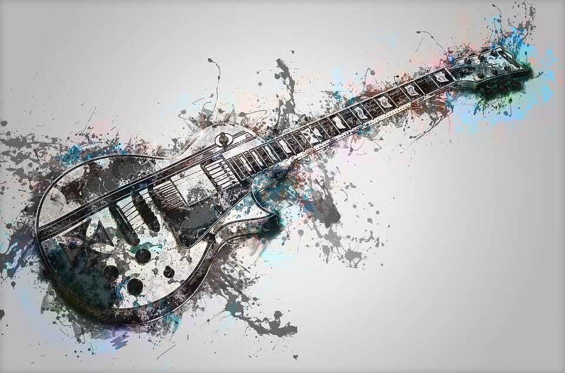
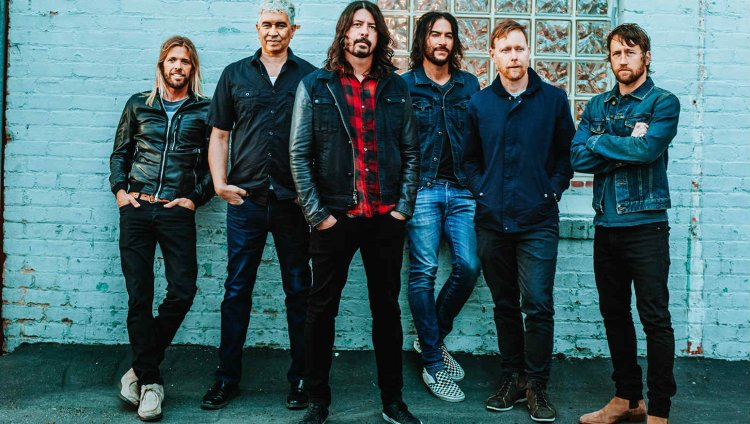
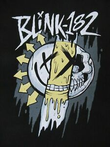
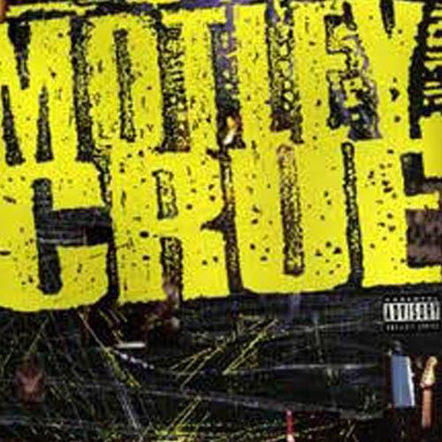
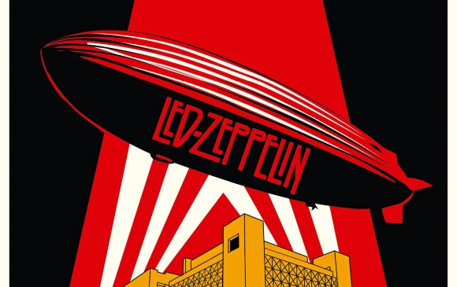
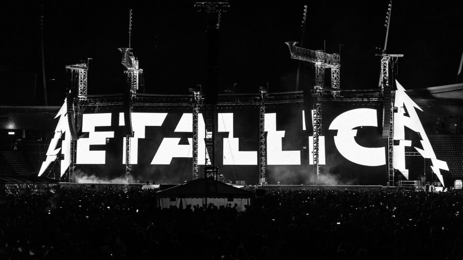

- 
- 
- 

Foo Fighters
Foo Fighters es una banda estadounidense de rock alternativo formada en la ciudad de Seattle en 1994 por Dave Grohl, exbaterista de Nirvana y Scream.
Leer más

Blink 182
Blink-182 es una banda californiana de pop punk, formada el 2 de agosto de 1992 por Tom DeLonge, Mark Hoppus, y Travis Barker en Poway, California.Son considerados como pioneros del pop punk .
Leer más

Mötley Crüe
Mötley Crüe es una banda estadounidense de Glam metal formada en Los Ángeles, California, en 1981 por el bajista Nikki Sixx y el baterista Tommy Lee a los que más tarde se les unirían el guitarrista Mick Mars y el vocalista Vince Neil.
Leer más

Led Zeppelin
Led Zeppelin fue un grupo británico de hard rock fundado en 1968 por el guitarrista Jimmy Page. La banda estuvo integrada por John Paul Jones como bajista y teclista, el vocalista Robert Plant y John Bonham a la batería.
Leer más
Linkin Park
Linkin Park es una banda estadounidense de rock alternativo procedente de Agoura Hills, California. Formada en 1996,el grupo estuvo inicialmente integrado por Mike Shinoda y Chester Bennington.
Leer más

Metalica
Metallica es una banda de thrash metal estadounidense que se origina en Los Ángeles, pero con base en San Francisco desde febrero de 1983. Fue fundada en 1981 en Los Ángeles por Lars Ulrich y James Hetfield.
Leer más